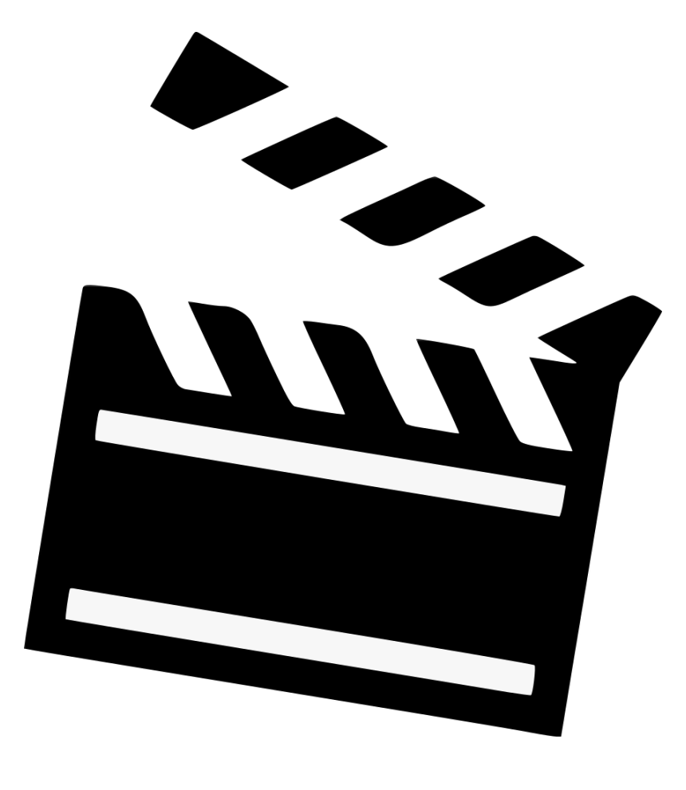
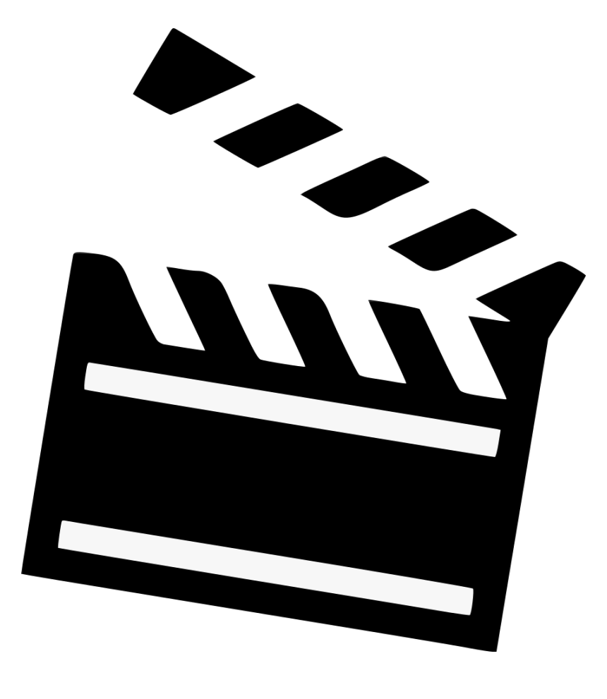
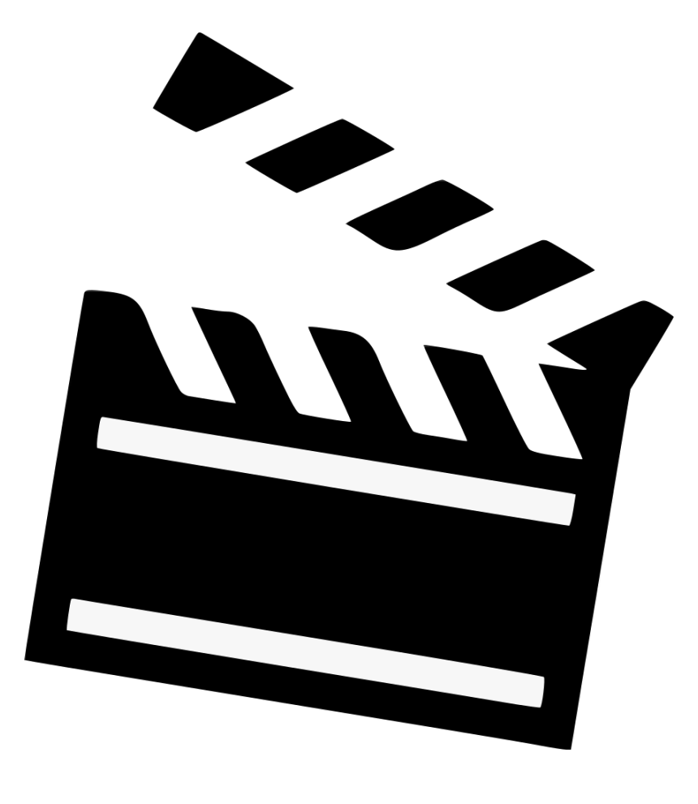
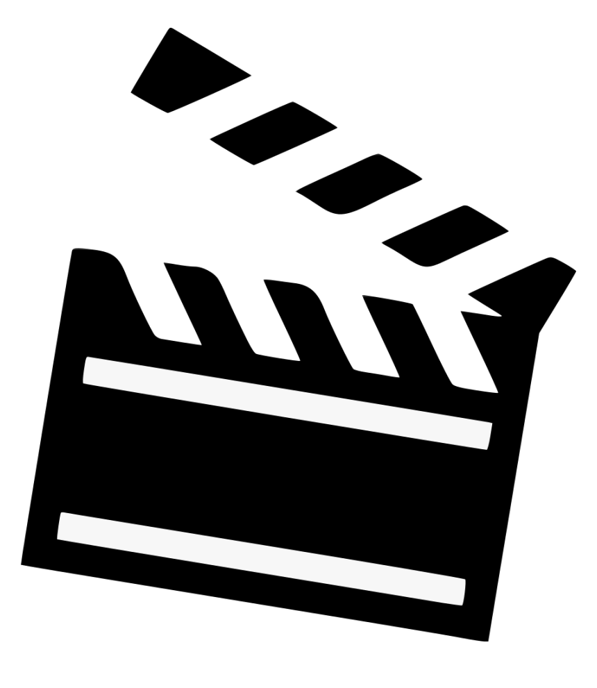

TækniskólaBíó
 



.jpeg)
Peter Quill, sem er enn að jafna sig á dauða Gamoru, safnar hópnum saman til að verja alheiminn. Ef verkefnið misheppnast, gæti það leitt til endaloks Verndara Vetrarbrautarinnar.
Panta Miða.jpg)
Tvær systur sem hafa ekki sést lengi hittast á ný, en endurfundirnir verða stuttir þegar fjölskyldumeðlimir þeirra verða andsettir af illum öndum. Þær verða nú að berjast fyrir lífi sínu þegar þær standa frammi fyrir martraðarkenndu útgáfu fjölskyldu sinni.
Panta Miða.jpg)
Píparinn Mario frá Brooklyn ferðast í gegnum Svepparíkið með prinsessunni Peach og mannlega sveppinum Toad í leit að bróður Mario, Luigi. Markmiðið er að bjarga heiminum frá hinu hrikalega eldspúandi skrímsli Bowser.
Panta Miða.jpeg)
Portrayal of a real-life figure Father Gabriele Amorth, a priest who acted as chief exorcist of the Vatican and who performed more than 100,000 exorcisms in his lifetime. (He passed away in 2016 at the age of 91.) Amorth wrote two memoirs -- An Exorcist Tells His Story and An Exorcist: More Stories -- and detailed his experiences battling Satan and demons that had clutched people in their evil.
Panta Miða